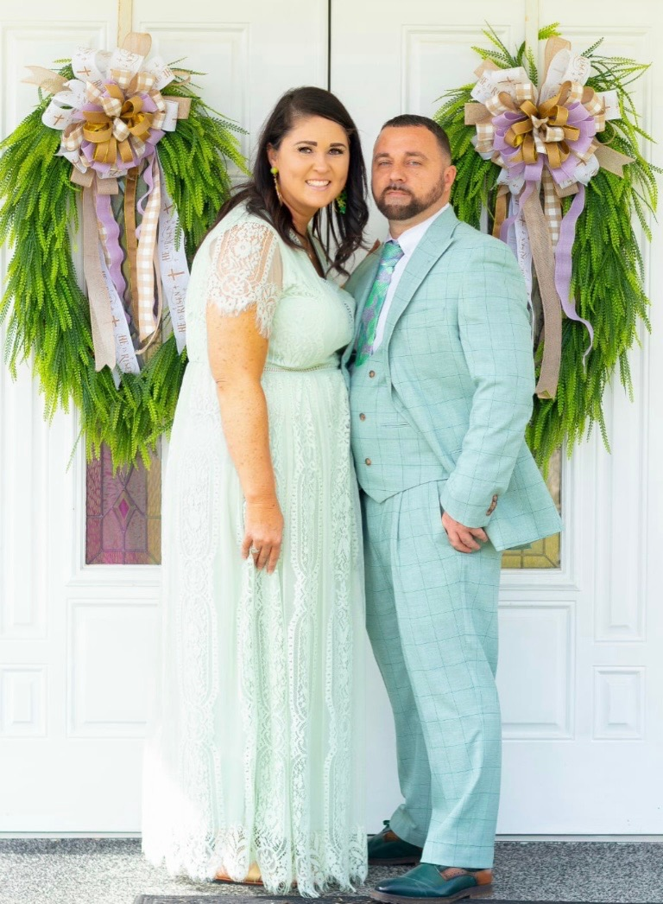
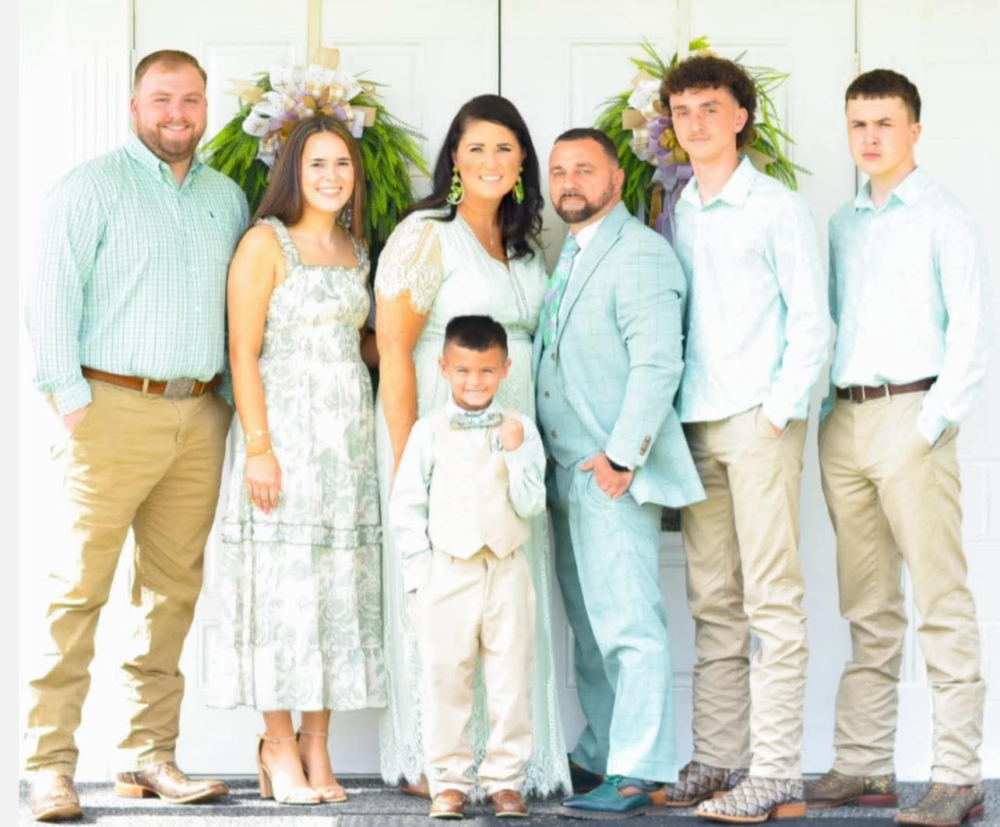

A Legacy of Faith
Floydale Full Gospel Ministries has been a beacon of light in our community since 1973. Founded by Pastor Benjamin Corbet Holder, our church is built on a deep passion for a relationship with Jesus Christ.
Today, we are a growing congregation that believes in the power of the Gospel to transform lives. We want you to know that no matter your race, gender, or history—you are welcome here. We accept all who come seeking the Truth.

Meet Pastor David Hyatt Sr.
Pastor David Hyatt Sr. has been in the ministry since 2008 and has served as the lead pastor of Floydale since March of 2023. Over the years, he has preached revivals across South and North Carolina, filling in for the Church of God and various other ministries. With a background in engineering and a heart for service, he is dedicated to leading our church into its next chapter of growth.
Join Us For Service
Sundays
10:00 AM — Sunday School
11:00 AM — Morning Worship
5:00 PM — Evening Worship
Wednesdays
7:00 PM
Worship & Bible Study
Our Location
1657 Haymount Rd. Latta, SC
Our Family
Ministry starts at home. Pastor David has been happily married to Crystal Hyatt since 2007. They are the proud parents of four children: Madison, Bryson, David Jr., and Bradley, and look forward to welcoming their future son-in-law, Peyton, to the family.

"But as for me and my house, we will serve the Lord."
— Joshua 24:15